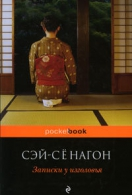
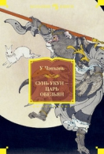

Название:Записки у изголовья
Автор:
Сэй-Сёнагон
Описание: Сэй-Сёнагон. Записки у изголовья 1. Весною — рассвет Весною — рассвет. Все белее края гор, вот они слегка озарились светом. Тронутые пурпуром облака тонкими лентами стелются по небу. Летом — ночь. Слов нет, она прекрасна в лунную пору, но и безлунный мрак радует глаза, когда друг мимо друга носятся бесчисленные светлячки. Если один-два светляка тускло мерцают в темноте, все равно это восхитительно. Даже во время дождя — необыкновенно красиво. Осенью — сумерки. Закатное солнце, бросая

Название:Сунь Укун — Царь обезьян
Автор:
У Чэнъэнь
Описание: У Чэнъэнь. Сунь Укун — Царь обезьян Предисловие I Если бы несколько десятилетий назад спросили у любого неспециалиста, как он представляет себе средневековый Китай, тотчас услышали бы привычный набор слов: таинственный, замкнутый, недоступный, «недвижный». Далее последовали бы такие понятия, как Поднебесная империя, Великая Китайская стена, мандарины, бумага, чай, рис, порох, фарфор… Подобное представление возникло у европейцев благодаря венецианцу Марко Поло (1254–1324), и было оно